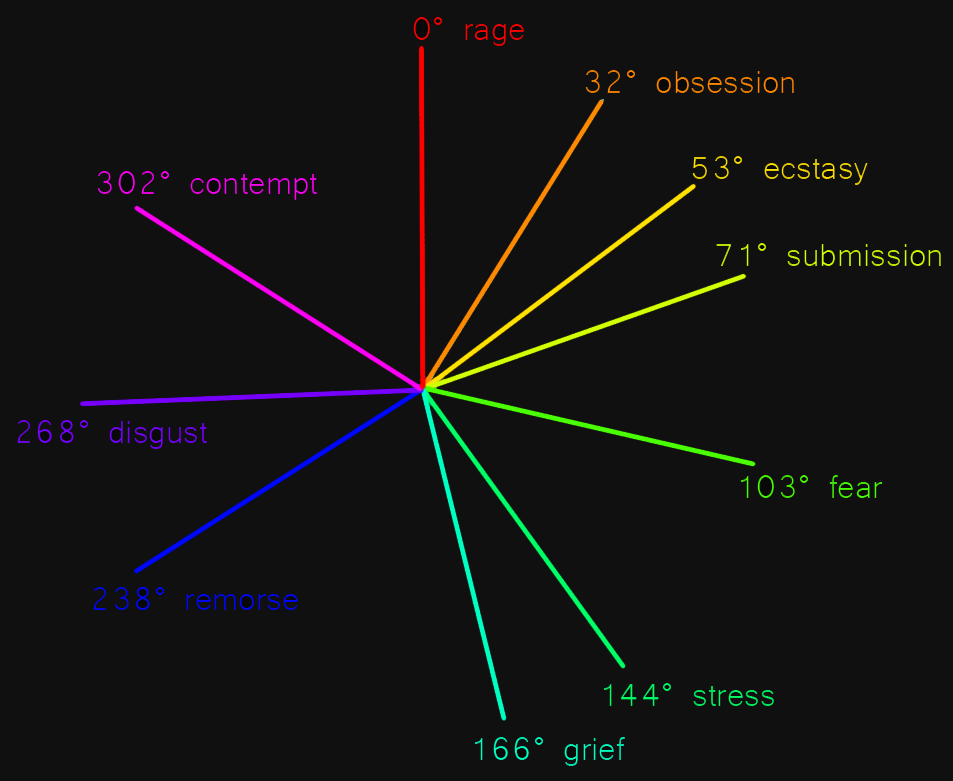
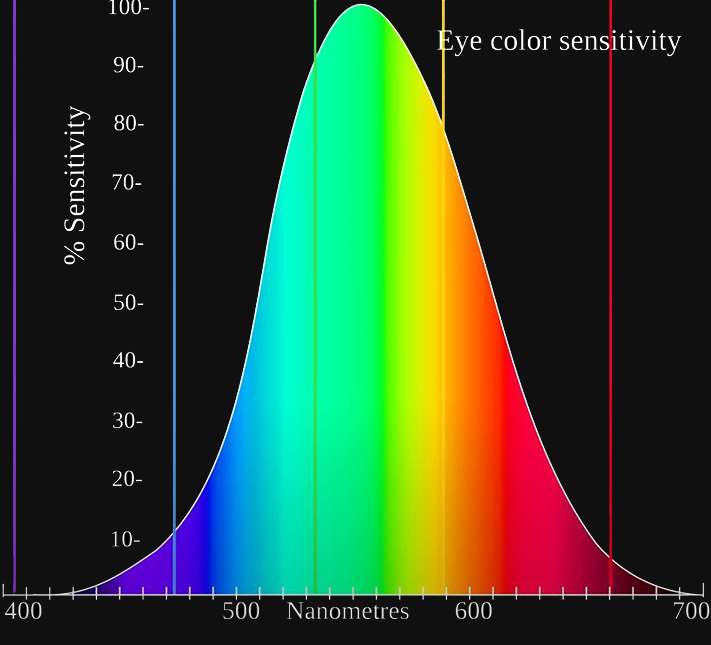

Colors
credits:
based on this vid - everything about color (literally)
made a cool graph for my mentals
the degrees are just hue values while the saturation and brightness are at max 100%. conviniently max hue value is at 360 but what led to this graph is the disproportion amount of certain types of colors on the hue scale u can achieve any color by mixing 3 primary ones. And yet look at where this shit is located on the wheel. I imagined primary colors would divide the wheel into 3 equal parts by 120° each, but no: R is 0°, Y is 57° and B is 238°
look at the brackets, [open image in new tab with right click] there are still 120 colors inside each third but u can clearly see the difference in how many types of colors there are. This is because hue is an alternative representation of the RGB color model and more closely aligns with the way human vision perceives color-making attributes
